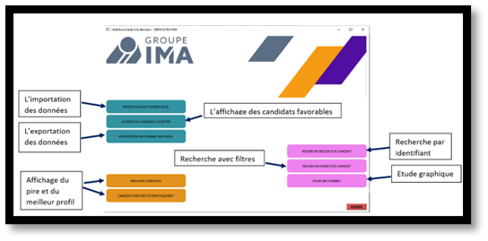

Data analysis, reporting, and data visualization
The goal of this group project was to build an app that could profile job candidates using an Excel file. In this case, the app was meant for IMA, an insurance mutual company, that wanted to hire customer service emlpoyees. We were given two Excel files with information about candidates who had already been reviewed (we knew which ones were accepted or not), such as their gender, education level, employment status, or whether they spoke a second language. Our job was to figure out selection criteria for candidates by studying the data.
We chose to work in Python, since this language let us handle every part of the project: working with dataframes, statistical programming, and building graphical interfaces.
Before analysing the data, we had to clean it to make it usable, since some values were missing or written incorrectly. Once the cleaning was done, we could define the selection criteria understand what seemed to influence a recruiter's decision, positively or negatively. This part was done by visualizing the data and contingency tables. For example, by comparing the variable showing whether a candidate spoke a second language with the variable showing the recruiter's decision, we saw that, proportionally, people who spoke another language were hired more often than others.
The features of the graphical interface are described in the first image. The final work had to be handed in with a documentation, to allow for any future updates for the app, and a user manual, to make the tool easier to learn.
Skills learned:
- Improving my Python skills
- Understanding the needs and requests of a client
- Cleaning and analyzing data
- Understanding the importance of visual summaries for describing a statistical variable
- Understanding that data sources each have their own features to consider (variation, accuracy, update frequency, and so on)
Illustrations

Overview of the graphical interface